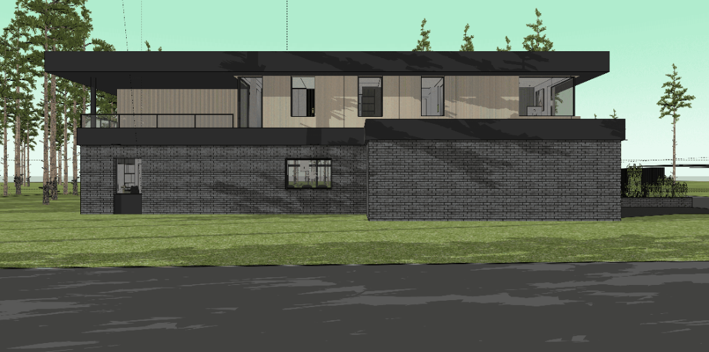

Exterior architectural elevation of the north facade facing top in the official floor plans. Interactive 2D architectural CAD model, dimension chains from drawings A.02 & A.03 (MAG Architekci), and 3D photographic rendering inspection.
Hover or click the numbered markers to inspect each architectural element measured in the PDF plans.

Graphite / Charcoal Clinker Brick: Hand-formed or waterstruck long-format clinker in dark anthracite up to +2.80 m level. Anchors the ground floor solidly to the site.
Vertical Wood Slats: Natural thermo-larch / thermo-ash with subtle shadow gaps from +3.43 m to +6.13 m. Warms the upper volume and contrasts against the dark horizontal bands.
Sheet Metal Cassette Banding: RAL 7016 / 9005 black matte aluminum panels forming the bold 63 cm intermediate cornice (+2.80 m to +3.43 m) and the 75 cm upper cantilevered roof fascia (+6.13 m to +6.88 m).
Diagram demonstrating how the North facade elements directly correspond to Drawing A.02 (Rzut Parteru) and Drawing A.03 (Rzut Piętra).
The Garage and Storage block (Axis 1–3) pushes forward 310 cm towards Grzybowa street (Axis A). The living wing (Kitchen, Pantry, Gabinet, Axis 3–6) is set back to Axis B, creating a sheltered private front entry court.
The upper floor aligns its north wall along Axis B across the entire house width. Above the garage is an unheated green/gravel flat roof (+3.53 m), and above the gabinet is a cantilevered open terrace (+3.31 m).
The 750 mm deep black roof attica (+6.13 to +6.88 m) and the 630 mm intermediate cornice (+2.80 to +3.43 m) create bold horizontal architectural bands. Upper north glazing receives glare-free indirect light, shielded by the roof overhang.
Complete list of all window and door openings located on the North facade extracted from drawings A.02 and A.03.
| Symbol | Level / Room | Width (mm) | Height (mm) | Sill Height (hp) | Lintel Level | Type & Function | Glazing / Specs |
|---|---|---|---|---|---|---|---|
| O1 | Ground Floor: 0.13 Kuchnia | 1 950 | 1 400 | hp = 1 100 mm (+1.10 m) | +2.50 m | Ribbon kitchen window (offset 6 100 mm from O2) | Triple glazed, warm spacer, Ug=0.5, anthracite frame, shares +2.50 m lintel line |
| O2 | Ground Floor: 0.15 Gabinet | 1 200 | 1 700 | hp = 800 mm (+0.80 m) | +2.50 m | Study window (starts 77+38=1150 mm from left edge) | Tilt & turn, aluminum sill at hp=800mm, brick parapet below |
| O11 | First Floor: 1.03 Łazienka | 1 000 | 1 950 | hp = 850 mm | +6.13 m | Vertical slot window (tilt & turn) | Acoustic & privacy laminated glass, concealed hinges |
| O11 | First Floor: 1.02 Łazienka | 1 000 | 1 950 | hp = 850 mm | +6.13 m | Vertical slot window (tilt & turn) | Acoustic & privacy laminated glass, concealed hinges |
| O11 | First Floor: 1.07 Komunikacja / Sypialnia | 1 000 | 1 950 | hp = 850 mm | +6.13 m | Vertical slot window (fixed / tilt) | Triple glazed, high solar factor g=50% |
| O13a / b | First Floor: 1.01 Sypialnia Master | 2 200 + 2 450 | 1 950 | hp = 850 mm | +6.13 m | All-glass panoramic corner window | Glass-to-glass structural silicone butt joint (szkło na styk) |
| 14a | First Floor: 1.04 Sypialnia (poza balkonem) | 1 000 (100 cm) | 2 700 (270 cm) | hp = 0 mm (+3.43 m) | +6.13 m | Full-height window starting after 6,400 mm balcony | Safety tempered & laminated glass (VSG/ESG), not covered by balcony glass |
| O14b | First Floor: 1.04 Sypialnia to Taras | 1 880 | 2 700 | hp = 0 mm | +6.03 m | Terrace sliding door (HST / slide) | Zero-barrier flush floor transition to terrace (+3.31 m) |
• 0.01 Garaż: 42.63 m² (gres)
• 0.02 Magazyn: 8.05 m² (gres)
• 0.13 Kuchnia: 44.27 m² (gres, window O1)
• 0.14 Spiżarnia: 3.49 m² (gres)
• 0.15 Gabinet: 12.50 m² (parkiet, door O2)
• 1.01 Sypialnia: 16.12 m² (corner window O13)
• 1.02 Łazienka: 6.46 m² (window O11)
• 1.03 Łazienka: 9.05 m² (window O11)
• 1.04 Sypialnia: 15.87 m² (window O14a & door O14b)
• Taras: 17.30 m² (gres, level +3.31 m)